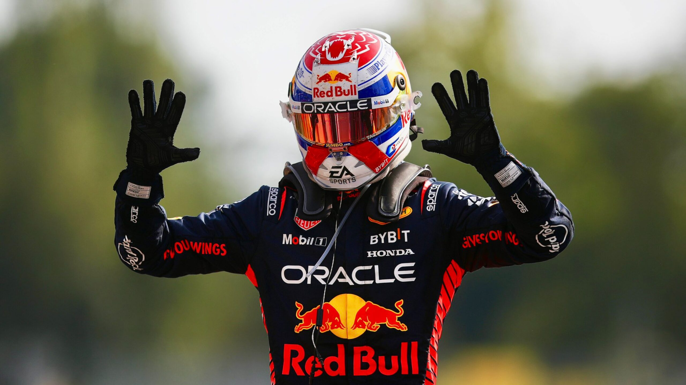

Merhaba, Ben Mustafa Emir Kayapınar
Sakarya Üniversitesi Bilgisayar Mühendisliği 1. sınıf (A Grubu) öğrencisiyim.
Neler Yapıyorum?
⚽ Futbol Tutkusu
Koyu bir Beşiktaş taraftarıyım, stadyumda o atmosferi yaşamayı seviyorum. Avrupa'da favorim Barça!
🏋️♂️ Spor
Spor salonunda düzenli fitness yaparak formumu koruyorum.
🎮 Oyun Dünyası
Elden Ring'in karanlık atmosferinde kaybolmayı, FC 26'da maç atmayı ve Valorant'ta rekabetçi girmeyi seviyorum.
🏁 Formula 1
Max Verstappen'in temposunu ve takımların F1 stratejilerini yakından takip ediyorum.

Formula 1 Tutkusu
Hafta sonları F1 yarışlarını kaçırmam. Max Verstappen'in yarış temposunu, hayatını ve Red Bull'un stratejilerini yakından takip ediyorum.